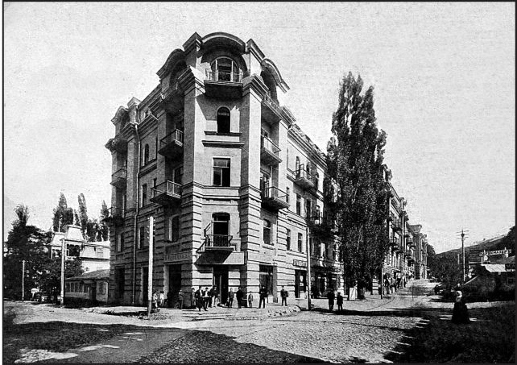

Страницы авторов "Тёмного леса"
Пишите нам! temnyjles@narod.ru
Бесспорно то, что Кисловодск является архитектурным лидером среди других городов Кавказских Минеральных Вод. В Кисловодске много зданий дореволюционного и советского времени, которые являются яркими примерами разных архитектурных стилей. Многие кисловодские памятники архитектуры - это творения знаменитых архитекторов.
Тот, кто совершает прогулки по старой части Кисловодска, получает неизгладимое впечатление от старинной архитектуры. Особенно сильно это впечатление у тех, кто побывал в самом центре города - на Курортном бульваре. Там расположены здания, построенные в период с середины XIX по начало XX века.
На углу улицы К. Маркса и Курортного бульвара находится пятиэтажное здание. Оно выделяется среди окружающих своей высотой. Со стороны бульвара здание кажется чрезвычайно узким и относительно небольшим. Но это не так. Вдоль улицы К. Маркса оно вытянуто настолько, что продолжается до самой горки, на которой стоит кисловодская филармония. Здание принадлежит санаторию "Нарзан". Оно является образцом архитектурного стиля "модерн". Об этом нам говорят разнообразные формы оконных проемов и различные способы их оформления. На первом этаже проемы большие, без наличников, прямоугольной формы. На втором и четвертом этажах - арочные с наличниками. На третьем - прямоугольные. На пятом этаже можно видеть интересные оконно-дверные проемы, также арочные, ведущие на балконы. Примечательны и сами балконы с коваными решетками.
Интересна история этого здания. 5 декабря 1902 г. в Пятигорске был заключен контракт между директором Кавказских Минеральных Вод В.В. Хвощинским и потомственным почетным гражданином, сахарозаводчиком К.Ф. Тахтамировым. По условию контракта, Тахтамиров брал в арендное содержание участок земли на углу Тополевой аллеи и Голицинского проспекта (ныне Курортный бульвар и ул. К. Маркса - прим. авт.) "мерой 950 квадратных сажен".
На участке располагались Скальковские ванны, паровые котлы, баки нефти, электростанция и торговые киоски. Константин Федорович Тахтамиров обязался за три года со дня заключения контракта возвести здесь гостиницу с ваннами и рестораном. Тахтамирову был поставлен целый ряд условий. Строительство не должно было затруднять работу паровых котлов, электрической станции и нефтяного двигателя. В здании гостиницы должно было находиться не менее 10 ванных кабин, а также клозет, комнаты ожидания, помещения для смотрительницы и белья при ванных кабинах. Отопление разрешалось только паровыми устройствами. Полы в ресторане, номерах, гостиной нужно было застелить паркетом, а в ванных кабинах - выложить метлахской плиткой. Контракт также обязывал Тахтамирова соорудить подъемную машину (лифт) внутри здания.
Далее в контракте приводился целый ряд указаний о стоимости номеров, кушаньях в ресторане, прислуге. Например, запрещалось держать признанную нездоровой прислугу. Кушанья должны были проходить проверку на свежесть и качество. Музыка вне часов, установленных директором Вод, запрещалась.
Строительство велось по проекту архитектора Вод И.И. Байкова (так было принято считать до середины 2000-х гг., пока авторами книги "Архитектура старого Кисловодска" С.В. Боглачевым и С.Н. Савенко не было установлено, что гостиницу проектировал архитектор И.И. Зелинский, а Байков только утвердил проект - прим. авт.)
В 1905 г. строительство было завершено. Так и построили самую большую гостиницу дореволюционного Кисловодска. Она располагала 200 номерами и была приспособлена для зимнего проживания, после того как в 1910 г. Кисловодск стал круглогодичным курортом. 30 номеров отапливались радиаторами. Гостиница была обставлена в стиле "модерн". Цены на номера регулировались Управлением Вод. 30 номеров стоили от 1 до 9 рублей. Остальные - от полутора до 10 рублей. Для тех времен это было достаточно дорого. При гостинице работало 10 ванных кабин, причем ванны могли быть как нарзанными так и пресными. Работали с 7 часов утра до 10 часов вечера. Стоимость одной ванны составляла 50, а в разгар сезона - 75 копеек. К 1914 г. они стоили уже от 50 копеек до рубля. Принимать ванны могли не только постояльцы гостиницы, но и все, кто лечился и отдыхал в Кисловодске. Однако постояльцы имели преимущество - они могли занять освободившуюся кабину вне очереди. Из удобств в гостинице были электричество, водопровод и телефон. На этажи постояльцев доставляли два электрических лифта. Работали библиотека, читальня, гостиная, зал, столовая и ресторан. Кушанья в последнем были высокого качества и всегда свежие, так как за этим тщательно следили. Ресторан по праву считался одним из лучших в городе. Ввиду того, что гостиница была самой большой на курорте, Тахтамиров назвал ее "Гранд-Отелем".
На первом этаже "Гранд-Отеля" в 1907 г. врачи А.Г. Васильев и Н.А. Тугаринов открыли физиотерапевтическую лечебницу "Азау" (в Ессентуках они совместно с врачом К.Ф. Барановичем открыли санаторий с таким же названием). Здесь практиковались различные виды лечения: водолечение (обтирание, обливание), души (Шарко, шотландский), электротерапия, грязелечение, фототерапия (светолечение), рентген, массаж, ингаляции.
Также на первом этаже гостиницы находилась "Фотография И.Т. Савенкова". В некоторых старинных путеводителях можно встретить рекламу этого фотоателье.
Здание гостиницы связано с именами великих людей и историческими событиями. В 1917 г. здесь поселился великий русский композитор С.С. Прокофьев. В Кисловодске он завершил работу над сонатой N4 и партитурой кантаты "Семеро их". Неоднократно Сергей Сергеевич выступал в Курзале (ныне Федеральная Филармония на КМВ - прим. авт.). в Кисловодске Прокофьев также встречался с поэтом К.Д. Бальмонтом, дирижером и пианистом В.И. Сафоновым. Бальмонту Сергей Сергеевич посвятил свой концерт N3, а поэт написал стихотворение "Сыну Богов Прокофьеву". Революционные события создали обстановку, из-за которой композитор не смог покинуть Кисловодск так быстро как предполагал. В "Гранд-Отеле" была устроена облава на белогвардейцев. К Прокофьеву, узнав, что он композитор, отнеслись дружески. Но уехать ему удалось только в марте 1918 г. , когда он получил охранное письмо от Кисловодского Совдепа. Примерно в это же время гостиницу национализировали (хотя она никогда не являлась частной собственностью Тахтамирова, который согласно договору был арендатором - прим. авт.)
В гражданскую войну за "Гранд-Отель" шла ожесточенная борьба между красногвардейцами во главе с председателем кисловодского Совдепа Д.И. Тюленевым и отрядами А.Г. Шкуро.
В те же годы здесь были созданы ЧК и ревтрибунал под председательством А.Ю. Ге. В гостинице жила и жена Ге - Ксения Михайловна, дочь кишиневского полковника-дворянина, отрекшаяся от своих знатных родственников. По рассказам старожилов, Ксению Ге однажды арестовали в гостинице белогвардейцы, но ей удалось бежать в костюме белого офицера. Хорошо известен трагический конец супругов. Александр Юльевич был изрублен на части, а Ксения Михайловна - повешена на Казачьей Горке.
В 1920 г. здание было отдано под лечебное учреждение. 19 мая того же года здесь открыли экскурсионный отдел при гороно. Заведующим назначили одного из старейших местных экскурсоводов П.А. Утякова.
В 1923 г. в "Гранд-Отеле" (название сохранялось) остановилась знаменитая американская танцовщица А. Дункан. Она выступала в кисловодском Курзале.
В 1927 г. в этом здании остановился приехавший из Крыма тяжелобольной поэт В.В. Маяковский. В городе в те дни висели афиши: "Нижний парк. Выступит поэт Владимир Маяковский. Разговор-доклад "Всем - все". Новые стихи и поэмы. Ответы на записки". В свободное от выступлений время поэт, находясь в своем номере, любил наблюдать, как снимают леса с только что отстроенных Октябрьских нарзанных ванн.
В тяжелые годы Великой Отечественной войны в здании работал крупный эвакогоспиталь на 1200 коек. Только 1 августа 1945 г. он был преобразован в санаторий на 375 коек. В 1948 г. были проведены реконструкция и капитальный ремонт здания. Санаторий получил название "Нарзан" и право именоваться санаторием повышенного типа. Располагал 320 койками. Для здравницы была приобретена новая мебель, лечебная и диагностическая аппаратура. В 1961 г. санаторий получил диплом ВЦСПС I степени.
В настоящее время это лишь первый корпус санатория "Нарзан". Не так давно это прекрасное творение Байкова было отремонтировано и находится в весьма удовлетворительном состоянии. На первом этаже расположены многочисленные магазины и аптека. Здание является достойным украшением центральной исторической части города. Мы также должны помнить, что это исторический памятник, с которым связаны имена великих людей. Утрата его была бы невосполнимой потерей для жителей и гостей города-курорта.
|  | Гранд-Отель. Фото Г.И. Раева. Нач. XX в. |
Вячеслав Яновский. Неакадемические сочинения